Yirggzmb's Stuff
Topic: Animal Crossing
Back to Main - Back to Animal Crossing
Kirby Town Tunes
Below you will find several images of Animal Crossing town tunes. These should work in any Animal Crossing game, even if the pictures are from New Horizons. The order listed is purely in the order I created them. Clicking on the images will bring them up full size.
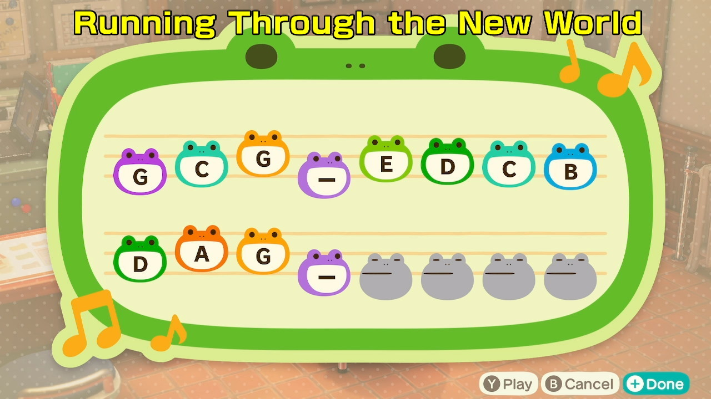
Kirby and the Forgotten Land - Running Through the New World
{kind=link}
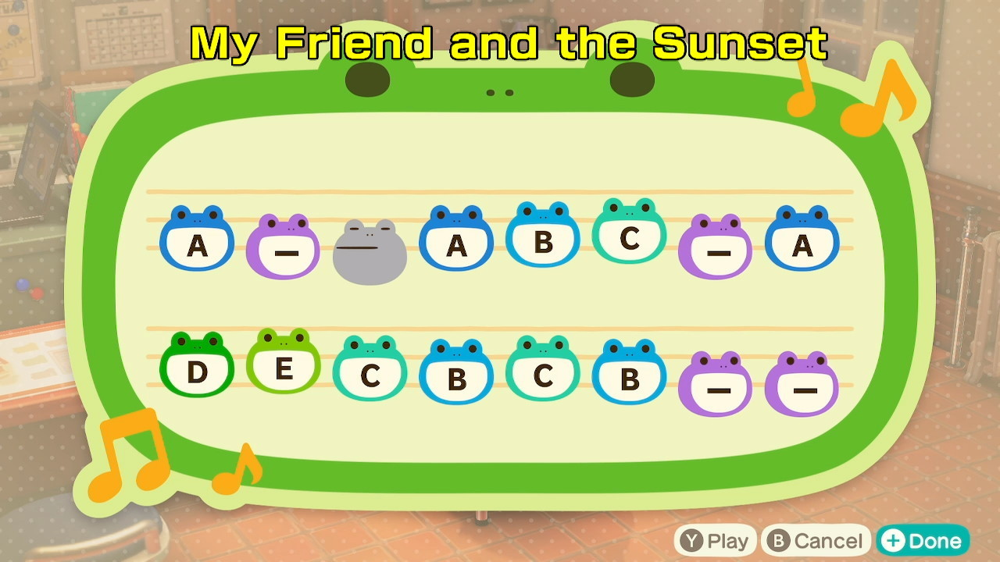
Kirby Super Star - My Friend and the Sunset (AKA My Friend and the Setting Sun)
{kind=link}
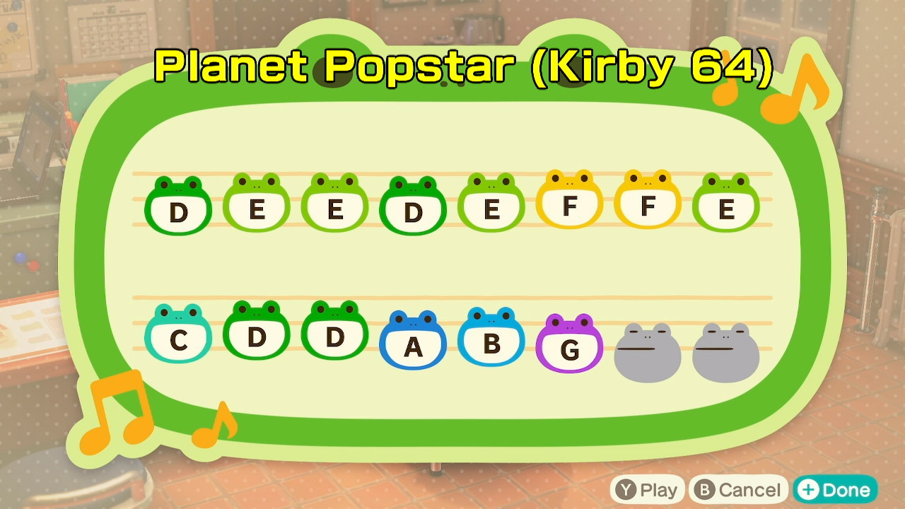
Kirby 64 - Planet Pop Star (level theme)
{kind=link}
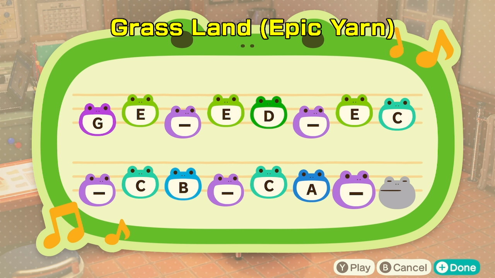
Kirby's Epic Yarn - Grass Land
{kind=link}
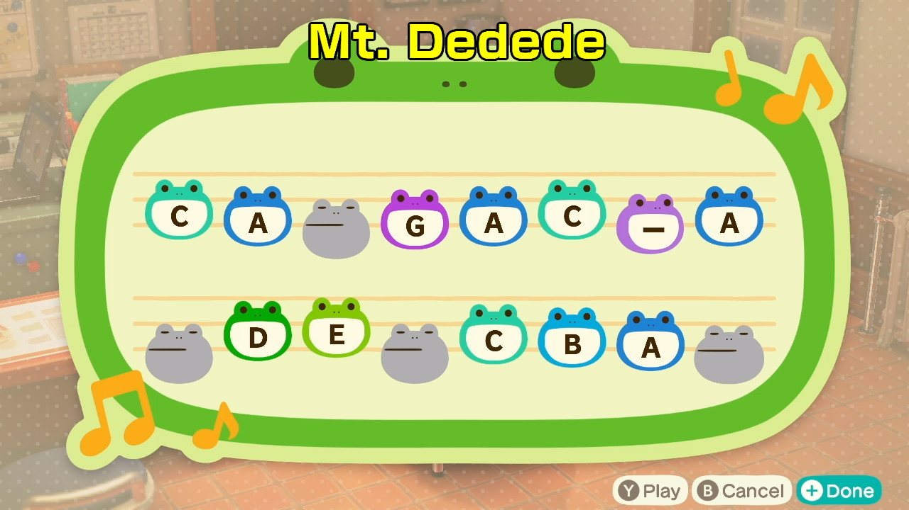
Kirby's Dream Land - Mt. Dedede
{kind=link}
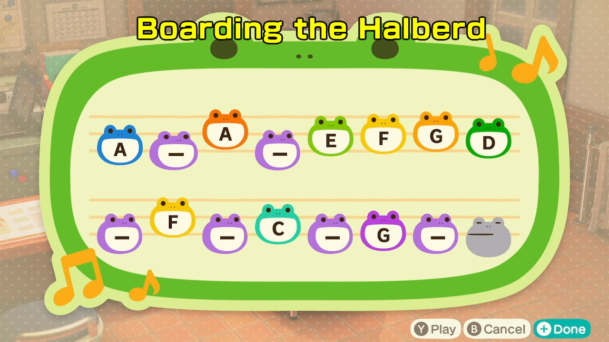
Kirby Super Star - Boarding the Halberd
{kind=link}
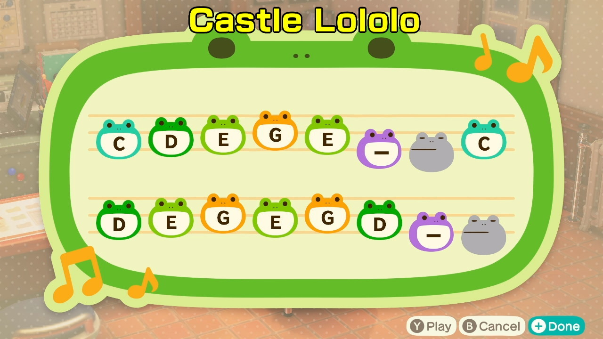
Kirby's Dream Land/Kirby Super Star Ultra - Castle Lololo (also associated with Dynablade)
{kind=link}
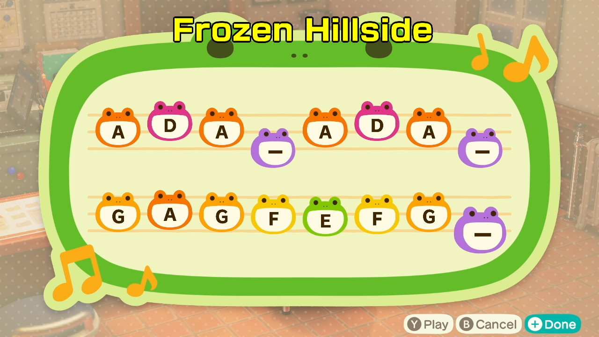
Kirby Air Ride - Frozen Hillside
{kind=link}
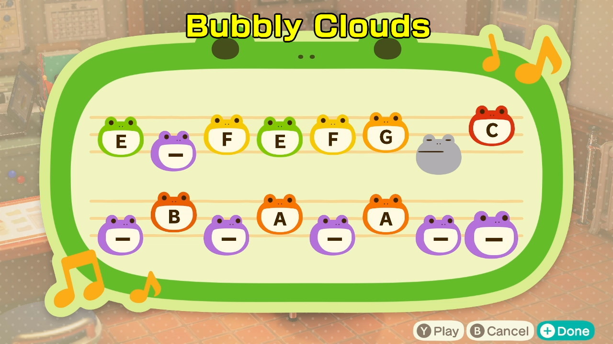
Kirby's Dream Land - Bubbly Clouds
{kind=link}
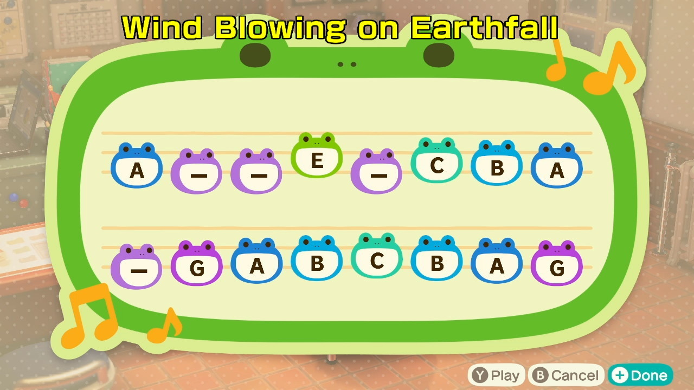
Kirby Star Allies - Wind Blowing on Earthfall
{kind=link}
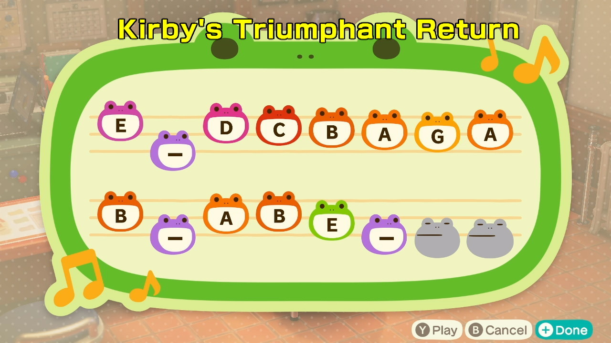
Kirby Super Star - Kirby's Triumphant Return
{kind=link}
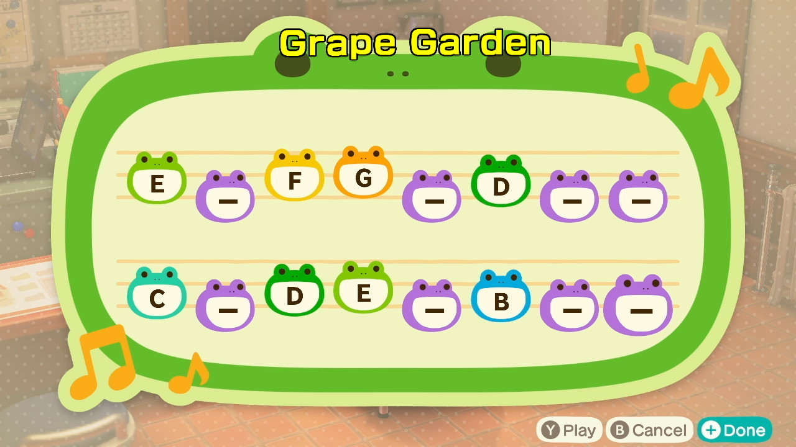
Kirby's Adventure - Grape Garden
{kind=link}
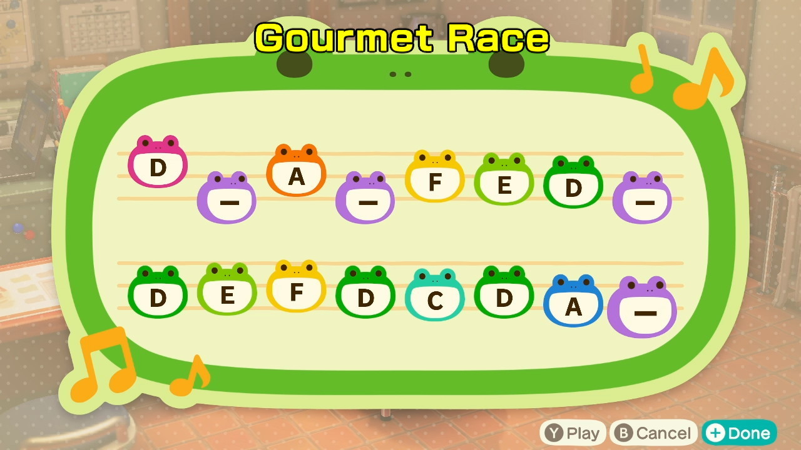
Kirby Super Star - Gourmet Race (also associated with Dedede)
{kind=link}
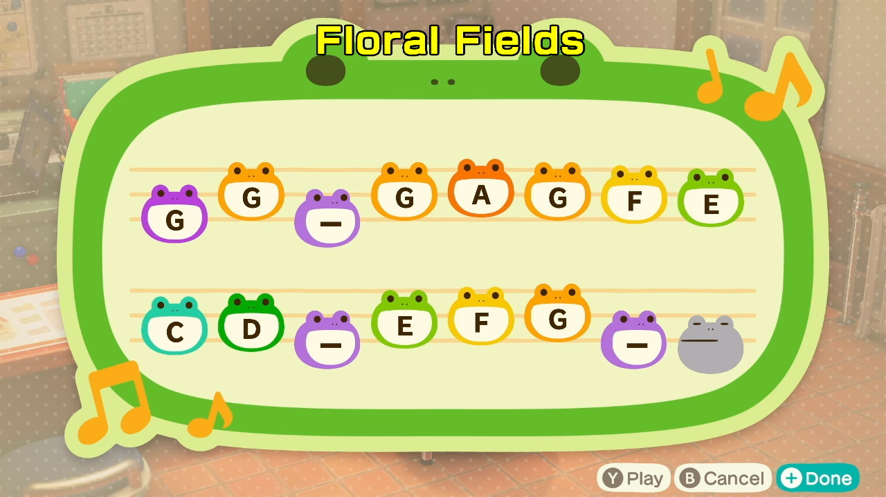
Kirby Triple Deluxe - Floral Fields
{kind=link}
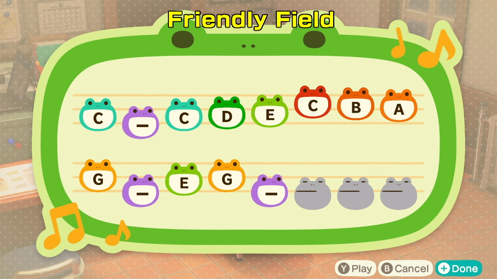
Kirby Star Allies - Friendly Field
{kind=link}
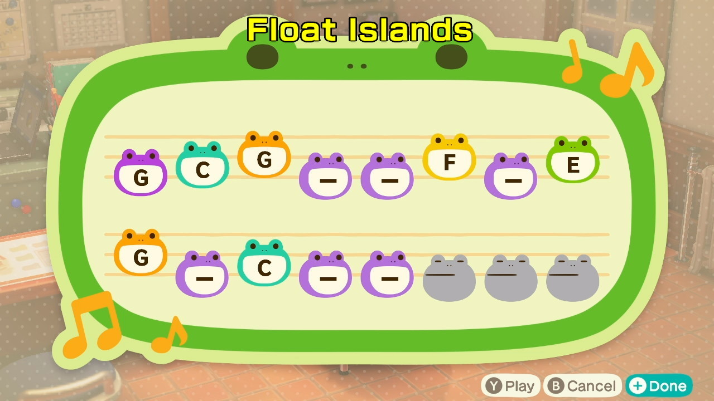
Kirby's Dream Land - Float Islands
{kind=link}
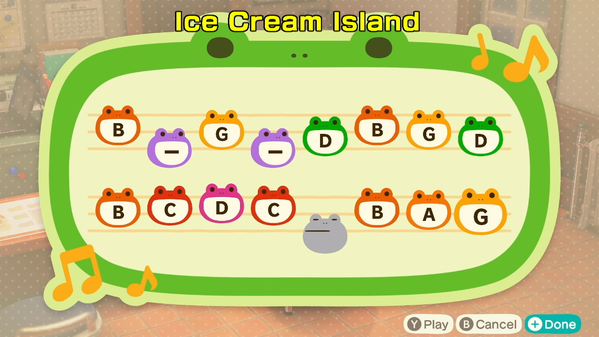
Kirby's Adeventure - Ice Cream Island
{kind=link}
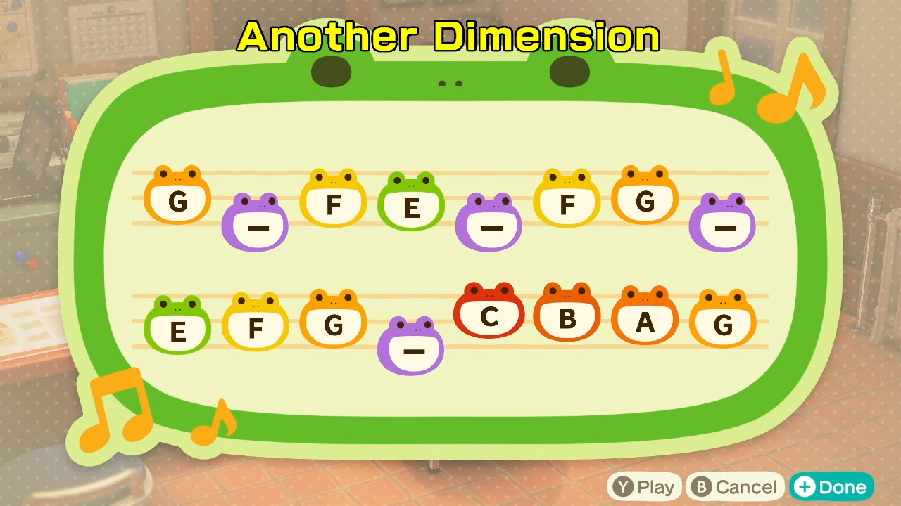
Kirby's Return to Dream Land - Another Dimension (The rift sections, not the shooter section)
{kind=link}